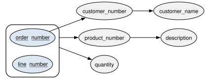
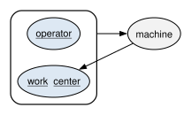
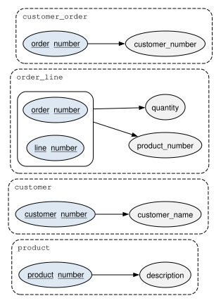
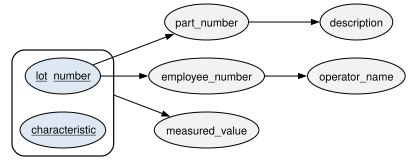
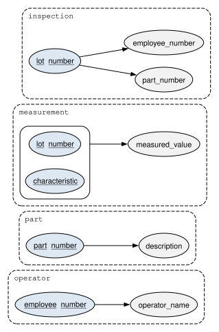

7 Normalization
After reading this chapter you should be able to:
- list the steps of normalizing a table, and say what each step produces
- recognize update, insertion, and deletion anomalies in a poorly designed table, and find their symptoms with queries
- state the functional dependencies that the rules of a business impose on a table, and draw them
- test a table for first, second, third, and Boyce-Codd normal form
- decompose a table into normal form without losing information
- explain why a sound class model tends to produce normalized tables
- recognize a multivalued dependency and put a table into fourth normal form
Not every table an engineer meets was designed. Many began as a spreadsheet: an order log kept by a sales clerk, an inspection sheet filled in on the floor, a report exported from another system. Such a table puts everything about an event on one row, which is convenient to read and troublesome to keep. The same fact is written many times, and a change to it must be made everywhere at once. When it is not, the table contradicts itself.
This chapter presents normalization, a method for testing a table’s design and for repairing it by splitting the table into smaller ones. The test uses the table’s functional dependencies, the rules that say which columns decide the values of which others, and the repair produces tables in which each fact is recorded once. Chapter 6 arrived at well-designed tables from a class model; this chapter arrives at them from the other direction, from a table that already exists. The two routes meet: normalizing a flat report of HG Industries’ orders produces the tables that the mapping produced.
The chapter begins, as Chapter 6 did, with the whole procedure, and then illustrates each step on one running example.
The running example is built from the orders of the book’s database, in your dbconcepts database, and the counts of repeated facts from the year of history, in your dbconcepts_history database.
7.1 The normalization procedure
This section presents the steps of normalizing a table, before the sections that illustrate each step.
A table is normalized in five steps:
- Look at the data. Take a few rows of the table, or make up a few that obey the business’s rules, and find the facts that repeat.
- State the functional dependencies. For each rule of the business that says one fact decides another, write the dependency, and draw them all in a dependency diagram.
- Find the key. From the dependencies, find the smallest set of columns that decides every other column.
- Name the normal form. Test the table against the normal forms, from the first up, and find the first one it fails.
- Decompose. Split the table into tables that each pass, without losing any row and, where the normal form allows it, without losing any dependency, and repeat the test on each.
Table 7.1 says where each step is illustrated.
| Step | Illustrated in |
|---|---|
| 1: look at the data | Section 7.2 |
| 2 and 3: dependencies and the key | Section 7.3 |
| 4: the normal form | Section 7.4 |
| 5: decompose | Section 7.5 |
The first step deserves a word of its own. Normalization is often taught as symbols, a list of dependencies manipulated by rules, and it goes wrong when the dependencies are guessed. Looking at rows first, real ones or made-up ones that obey the business’s rules, grounds each dependency in something concrete and shows the repeated facts that the method exists to remove. It is the same habit as the hand evaluations of Chapter 3: see a few rows before trusting a rule about all of them.
7.2 Anomalies in a poorly designed table
This section illustrates step 1: it looks at the rows of a flat table and at what goes wrong when the table is kept up to date.
Suppose that the sales department of HG Industries kept its orders in one table, a flat order report with a row for each order line: the order’s number, its customer’s number and name, the line’s number, its product’s number and description, and the quantity ordered. The book’s database does not store such a table, but a query can produce it, by joining the four tables of stage D3. We write the join once, as a common table expression named order_report (Section 3.10), and use it throughout the chapter as if it were a stored table. Its rows for the first six orders are:
WITH order_report AS (
SELECT o.order_number, c.customer_number,
c.name AS customer_name, l.line_number,
p.product_number, p.description, l.quantity
FROM distribution.customer_order AS o
JOIN distribution.customer AS c
ON c.customer_pk = o.customer_fk
JOIN distribution.order_line AS l
ON l.customer_order_fk = o.customer_order_pk
JOIN distribution.product AS p
ON p.product_pk = l.product_fk
)
SELECT *
FROM order_report
WHERE order_number <= 'SO-5006'
ORDER BY order_number, line_number;| order_number | customer_number | customer_name | line_number | product_number | description | quantity |
|---|---|---|---|---|---|---|
| SO-5001 | C-1001 | Riverside Hardware | 1 | HT-100 | Two-wheel hand truck | 10 |
| SO-5001 | C-1001 | Riverside Hardware | 2 | GC-300 | Steel garden cart | 4 |
| SO-5002 | C-1003 | Cedar Creek Home Center | 1 | HT-200 | Convertible hand truck | 6 |
| SO-5003 | C-1002 | Summit Farm Supply | 1 | HT-100 | Two-wheel hand truck | 12 |
| SO-5003 | C-1002 | Summit Farm Supply | 2 | HT-200 | Convertible hand truck | 4 |
| SO-5003 | C-1002 | Summit Farm Supply | 3 | GC-300 | Steel garden cart | 6 |
| SO-5004 | C-1001 | Riverside Hardware | 1 | HT-100 | Two-wheel hand truck | 20 |
| SO-5004 | C-1001 | Riverside Hardware | 2 | GC-300 | Steel garden cart | 5 |
| SO-5004 | C-1001 | Riverside Hardware | 3 | HT-100 | Two-wheel hand truck | 10 |
| SO-5005 | C-1004 | Midtown Tool Supply | 1 | GC-300 | Steel garden cart | 8 |
| SO-5006 | C-1006 | Lakeside Distributors | 1 | HT-100 | Two-wheel hand truck | 25 |
| SO-5006 | C-1006 | Lakeside Distributors | 2 | HT-200 | Convertible hand truck | 10 |
Read Table 7.2 for the facts that repeat. Riverside Hardware’s name appears on five of these twelve rows, once for each line of each of its orders; the HT-100’s description appears on five; and customer C-1001 is paired with its name every time. None of the repetitions records anything new. Each is a copy of a fact already recorded, and every copy is a place where the table can contradict itself. The contradictions come in three kinds, called anomalies.
An update anomaly occurs when a fact stored many times is changed in some copies but not all. If Riverside Hardware changed its name, the report would need the change on every row of every order the customer ever placed:
WITH order_report AS (
SELECT o.order_number, c.customer_number,
c.name AS customer_name, l.line_number
FROM distribution.customer_order AS o
JOIN distribution.customer AS c
ON c.customer_pk = o.customer_fk
JOIN distribution.order_line AS l
ON l.customer_order_fk = o.customer_order_pk
)
SELECT customer_number, customer_name,
COUNT(*) AS rows_holding_the_name
FROM order_report
GROUP BY customer_number, customer_name
ORDER BY customer_number;| customer_number | customer_name | rows_holding_the_name |
|---|---|---|
| C-1001 | Riverside Hardware | 6 |
| C-1002 | Summit Farm Supply | 5 |
| C-1003 | Cedar Creek Home Center | 3 |
| C-1004 | Midtown Tool Supply | 1 |
| C-1005 | Prairie Garden Center | 1 |
| C-1006 | Lakeside Distributors | 4 |
| C-1007 | Tri-County Farm and Home | 2 |
Table 7.3 says that renaming Riverside Hardware would take six changes, and missing one would leave two names for one customer number. A deletion anomaly occurs when removing a row removes a fact that should have stayed. Midtown Tool Supply (C-1004) has one row: its only order, SO-5005, has one line. Deleting that line, say because the line was entered in error, would remove every trace of Midtown Tool Supply from the report, including that it is a customer at all. An insertion anomaly occurs when a fact cannot be recorded until an unrelated fact exists. Northgate Hardware (C-1008) is a customer with no orders, so it has no row in the report and cannot be given one without an order line to attach it to; the GC-400 poly cart, never ordered, has no row either.
The anomalies grow with the data. Over the year of history in stage G, the same report holds each fact about customers and products many times over:
WITH order_report AS (
SELECT o.order_number, c.customer_number,
p.product_number
FROM distribution.customer_order AS o
JOIN distribution.customer AS c
ON c.customer_pk = o.customer_fk
JOIN distribution.order_line AS l
ON l.customer_order_fk = o.customer_order_pk
JOIN distribution.product AS p
ON p.product_pk = l.product_fk
)
SELECT COUNT(*) AS rows,
COUNT(DISTINCT customer_number) AS customers,
COUNT(DISTINCT product_number) AS products,
COUNT(DISTINCT order_number) AS orders
FROM order_report;| rows | customers | products | orders |
|---|---|---|---|
| 1065 | 29 | 4 | 614 |
Table 7.4 shows 1,065 rows that record the names of 29 customers and the descriptions of 4 products. Each customer’s name is stored, on average, about 37 times, and each product’s description over 250 times. The tables of the book’s database store each once. The next section finds the rules that decide which facts repeat.
7.3 Functional dependencies
This section illustrates steps 2 and 3: it states the rules that decide the values of columns, draws them, and finds the key.
A functional dependency holds between two sets of columns of a table when the values of the first set decide the values of the second: any two rows that agree on the first set also agree on the second. It is written with an arrow, order_number → customer_number, and read “order number determines customer number”. The set on the left is called the determinant. In words, the dependency says: whenever we see order SO-5001, we see customer C-1001, on every row of the order, now and in every future state of the table.
Functional dependencies come from the rules of the business, as candidate keys do (Section 2.2). For the order report, the rules are:
- An order is placed by one customer:
order_number → customer_number. - A customer has one name:
customer_number → customer_name. - A line of an order is for one product, in one quantity:
order_number, line_number → product_number, quantity. - A product has one description:
product_number → description.
Notice the third rule’s determinant, two columns together. Neither the order nor the line number alone decides the product, since an order has several lines and every order has a line 1. The product does not identify a line either, since lines 1 and 3 of SO-5004 are both for the HT-100; the pair decides it.
A functional dependency diagram draws a table’s dependencies. Each column is an oval, and an arrow runs from each determinant to each column it determines. A determinant of several columns is a larger outline drawn around their ovals, and its arrows leave the outline, since only the columns together decide the value. The columns of the key are shaded and underlined. Figure 7.1 draws the four dependencies of the order report.

Read Figure 7.1 one arrow at a time. The outline around order_number and line_number sends arrows to product_number and quantity: the pair decides them. A separate arrow leaves the order_number oval alone, inside the outline, for customer_number, which sends its own arrow on to customer_name. The last arrow runs from product_number to description. Thus each rule of the list above is drawn as the arrows from its determinant, one to each column it determines: the key’s outline sends two arrows for the third rule, and the figure draws four dependencies with five arrows.
A dependency is a rule, so the rows can refute it but never prove it, as with a candidate key. A query finds refutations: a dependency X → Y is broken whenever some value of X appears with two different values of Y. Grouping by X and counting the different values of Y (Section 4.2) checks it over the whole year of history:
WITH order_report AS (
SELECT c.customer_number, c.name AS customer_name
FROM distribution.customer_order AS o
JOIN distribution.customer AS c
ON c.customer_pk = o.customer_fk
JOIN distribution.order_line AS l
ON l.customer_order_fk = o.customer_order_pk
)
SELECT customer_number,
COUNT(DISTINCT customer_name) AS names
FROM order_report
GROUP BY customer_number
HAVING COUNT(DISTINCT customer_name) > 1;| customer_number | names |
|---|---|
Table 7.5 is empty: no customer number appears with two names, so the data does not refute customer_number → customer_name. In a real flat table kept by hand, the same query is the quickest way to find the update anomalies that have already happened.
The dependencies also give step 3, the key. A set of columns is a key of the table when it determines every other column, directly or through a chain of dependencies, and no smaller set does. Follow the chains of Figure 7.1 from order_number and line_number. Together they determine product_number and quantity; order_number determines customer_number, which determines customer_name; and product_number determines description. Every column is reached, so the pair (order_number, line_number) is a key, and neither column alone is, since neither reaches product_number. Its two ovals are shaded and underlined in Figure 7.1.
Two kinds of dependency on a key matter for what follows. A dependency is partial when a column that is not part of a key depends on only part of a composite key: customer_number depends on order_number alone, not on the whole key. A dependency is transitive when a column that is not part of a key depends on the key only through another column that is not a key: customer_name depends on the key through customer_number. Both are visible in Figure 7.1. A partial dependency is an arrow that leaves one oval inside the key’s outline rather than the outline itself; a transitive one is a chain of arrows, the second leaving an unshaded oval.
7.4 Normal forms
This section illustrates step 4: it defines the normal forms, from the first through Boyce-Codd, and tests the order report against each.
A normal form is a condition on a table’s dependencies that rules out one kind of repeated fact. The forms are nested: a table in a higher normal form is in every lower one. The first three are often summarized by one sentence, due to William Kent (Kent 1983): every column that is not part of a key depends on the key, the whole key, and nothing but the key.
A table is in first normal form (1NF) when every value is atomic, a single value from its column’s domain (Section 2.1), and there are no repeating groups. Recall from Section 2.1.1 that the relational model already requires all three: atomic values are the first property of a relation, values from the domain are the second, and the ban on repeating groups is the companion of the first. Thus, 1NF is those rules stated as a test of a table. The order report is in 1NF, since each row holds one line. A version of the report with one row per order and the order’s products listed in a single cell is not:
SELECT o.order_number,
STRING_AGG(p.product_number, ', '
ORDER BY l.line_number) AS products
FROM distribution.customer_order AS o
JOIN distribution.order_line AS l
ON l.customer_order_fk = o.customer_order_pk
JOIN distribution.product AS p
ON p.product_pk = l.product_fk
WHERE o.order_number <= 'SO-5004'
GROUP BY o.order_number
ORDER BY o.order_number;| order_number | products |
|---|---|
| SO-5001 | HT-100, GC-300 |
| SO-5002 | HT-200 |
| SO-5003 | HT-100, HT-200, GC-300 |
| SO-5004 | HT-100, GC-300, HT-100 |
STRING_AGG, PostgreSQL’s aggregate for the purpose (the SQL standard’s is LISTAGG), joins a group’s values into one string. The products column of Table 7.6 holds a list, not a value: no query can ask for the orders of the HT-200 without searching inside strings, and no foreign key can refer from one element of the list to the product table. Such a column belongs in a report, where it is read, and never in a stored table.
A table is in second normal form (2NF) when it is in 1NF and no column that is not part of a key depends on only part of a key; that is, it has no partial dependency. The order report fails. customer_number and customer_name depend on order_number alone, part of the key (order_number, line_number), and the failure is the cause of the repetition: an order’s customer is repeated on every line of the order because it depends on the order, not on the line. A table whose keys are all single columns cannot have a partial dependency, so it is in 2NF as soon as it is in 1NF.
A table is in third normal form (3NF) when it is in 2NF and no column that is not part of a key depends on another such column; that is, it has no transitive dependency on a key. The report fails here too, twice: customer_name depends on customer_number, and description on product_number, neither of which is a key. Each repeats a fact about a customer or a product on every row that mentions it. Thus, the order report is in 1NF, and it fails 2NF and 3NF; step 5 of the procedure must repair both.
The definitions of 2NF and 3NF speak of columns that are not part of a key, and that leaves a gap: a column that is part of a key may still depend on a column that is not. A table is in Boyce-Codd normal form (BCNF) when every determinant of a dependency is a candidate key. (Strictly, a determinant may also be a set of columns that contains a candidate key, called a superkey; the book states the rule with candidate keys because a determinant is taken to be as small as it can be.) BCNF is stricter than 3NF, and the difference shows up only in tables with overlapping composite keys. For example, suppose that HG Industries recorded which machine each operator runs in each work center, under two rules: an operator runs one machine in each work center, and each machine belongs to one work center. A few hypothetical rows illustrate:
operator |
work_center |
machine |
|---|---|---|
| Maria Lopez | SAW | M-01 |
| Maria Lopez | WLD | M-04 |
| Linda Nguyen | WLD | M-04 |
| Linda Nguyen | PNT | M-06 |
| Aisha Patel | WLD | M-05 |
Figure 7.2 draws the two rules as dependencies.

In Figure 7.2, the arrow leaving the outline around operator and work_center is the first rule, operator, work_center → machine, and the arrow from machine back into the outline, onto work_center, is the second, machine → work_center. An arrow that points into the key from a column outside it, a column that is not itself a candidate key, is the mark of a table that is not in BCNF. The table has two candidate keys, (operator, work_center) and (operator, machine), since a machine decides its work center. Every column is part of a key, so no column “not part of a key” exists, and the table is in 3NF. But the determinant machine is not a candidate key, so the table is not in BCNF. The consequence is a repeated fact: that M-04 is in Welding is recorded on two rows of Table 7.7, and moving M-04 to another work center would need both changed. Exercise 7.6 asks for the repair.
Table 7.8 collects the tests.
| Normal form | The table must have | The order report |
|---|---|---|
| 1NF | atomic values, no repeating groups | passes |
| 2NF | 1NF, and no column outside a key depending on part of a key | fails: the customer depends on the order alone |
| 3NF | 2NF, and no column outside a key depending on another such column | fails: names and descriptions depend on numbers that are not keys |
| BCNF | every determinant a candidate key | fails, as it fails 3NF |
In practice, a table in 3NF is nearly always in BCNF, and designers aim for BCNF and settle for 3NF only when BCNF would cost a dependency, as Section 7.5 shows. Higher normal forms exist, and Section 7.7 presents the fourth. The next section repairs the order report.
7.5 Decomposition
This section illustrates step 5: it splits a table that fails a normal form into tables that pass, and checks that nothing is lost in the split.
A table that fails a normal form is repaired by decomposition: replacing it with two or more smaller tables whose columns, together, are the original columns. Each split follows one rule. Take a dependency X → Y that breaks the normal form; move X and Y into a new table, whose key is X; and remove Y from the original table, keeping X there to refer to the new table. Then test both tables again, and split again until every table passes.
Let’s decompose the order report. It fails 2NF through the partial dependency order_number → customer_number, and customer_name depends on customer_number, so it travels with it. The first split moves the three columns about the order into a table of their own:
customer_order (order_number, customer_number, customer_name), keyorder_number;order_line (order_number, line_number, product_number, description, quantity), key (order_number,line_number).
Both are in 2NF, since customer_order has a single-column key and every column left in order_line depends on the whole of its key. Neither is in 3NF. In customer_order, customer_name depends on customer_number, which is not a key; in order_line, description depends on product_number. The second and third splits remove the two transitive dependencies in the same way, moving customer_number and customer_name into a customer table and product_number and description into a product table. Listing 7.1 writes the four resulting tables in the relational schema notation of Section 2.4.
customer (customer_number, customer_name)
primary key: customer_number
customer_order (order_number, customer_number)
primary key: order_number
customer_number references customer_number in customer,
must not be NULL
order_line (order_number, line_number, product_number,
quantity)
primary key: (order_number, line_number)
order_number references order_number in customer_order,
must not be NULL
product_number references product_number in product,
must not be NULL
product (product_number, description)
primary key: product_numberNotice that each split left a foreign key behind: the determinant that moved into the new table stays in the old one, and refers to the new table’s key. Figure 7.3 draws the dependencies of the four tables, each table in a dashed outline.

Compare Figure 7.3 with Figure 7.1. Every arrow of the original diagram now lies inside one outline, and in every outline the arrows leave the key and nothing else. Thus each table is in BCNF: its only determinant is its key. The two transitive chains of Figure 7.1 have been cut at the middle column, which is now a foreign key in one table and the key of another.
The four tables are the four tables of stage D3 that Chapter 6 mapped from the class model (Listing 6.12). The database adds what normalization does not decide: a surrogate primary key for each table, with the natural key kept as an alternate key (Section 6.6), and the columns the report did not carry, such as order_date and unit_price. The dependencies are the same. Normalizing the report and mapping the class model are two routes to one design.
7.5.1 Lossless decomposition
A decomposition must not lose information. A decomposition is lossless when joining its tables gives back the original table’s rows, no fewer and no more. For a split on a functional dependency, the rule that guarantees it is simple: each split must join on columns that are a key of one of the two tables. Every split of the order report does, since the columns left behind (order_number, customer_number, product_number) are the keys of the new tables.
The order report itself is the evidence. Table 7.2 was produced by joining the four tables of stage D3 on their keys, so the join gives back every row the report holds. Over the year of history, the join gives one row for each order line, no more:
WITH order_report AS (
SELECT o.order_number, l.line_number
FROM distribution.customer_order AS o
JOIN distribution.customer AS c
ON c.customer_pk = o.customer_fk
JOIN distribution.order_line AS l
ON l.customer_order_fk = o.customer_order_pk
JOIN distribution.product AS p
ON p.product_pk = l.product_fk
)
SELECT (SELECT COUNT(*) FROM distribution.order_line)
AS order_lines,
(SELECT COUNT(*) FROM order_report) AS report_rows;| order_lines | report_rows |
|---|---|
| 1065 | 1065 |
Table 7.9 shows 1,065 of each. A split that joins on a column that is not a key of either table is different. Suppose that we split the lines of the first three orders into a table of each line’s product, (order_number, line_number, product_number), and a table of the quantities ordered of each product, (product_number, quantity). The common column, product_number, is a key of neither. Let’s join the two tables by hand for one product, the HT-100. It appears on two lines, and with two quantities:
| Line’s product | Quantity row | Pair kept by the join | A real line? |
|---|---|---|---|
| SO-5001, line 1, HT-100 | HT-100, 10 | SO-5001, line 1, 10 | yes |
| SO-5001, line 1, HT-100 | HT-100, 12 | SO-5001, line 1, 12 | no |
| SO-5003, line 1, HT-100 | HT-100, 10 | SO-5003, line 1, 10 | no |
| SO-5003, line 1, HT-100 | HT-100, 12 | SO-5003, line 1, 12 | yes |
Every pairing of Table 7.10 agrees on product_number, so the join keeps all four, and two of them are lines that were never ordered: the join says that SO-5001 ordered 12 hand trucks on line 1, and it ordered 10. The same happens for each product. The query below builds the two parts with common table expressions and joins them:
WITH line AS (
SELECT o.order_number, l.line_number,
p.product_number, l.quantity
FROM distribution.customer_order AS o
JOIN distribution.order_line AS l
ON l.customer_order_fk = o.customer_order_pk
JOIN distribution.product AS p
ON p.product_pk = l.product_fk
WHERE o.order_number <= 'SO-5003'
),
line_product AS (
SELECT order_number, line_number, product_number
FROM line
),
product_quantity AS (
SELECT DISTINCT product_number, quantity
FROM line
)
SELECT lp.order_number, lp.line_number,
lp.product_number, pq.quantity
FROM line_product AS lp
JOIN product_quantity AS pq
ON pq.product_number = lp.product_number
ORDER BY lp.order_number, lp.line_number, pq.quantity;| order_number | line_number | product_number | quantity |
|---|---|---|---|
| SO-5001 | 1 | HT-100 | 10 |
| SO-5001 | 1 | HT-100 | 12 |
| SO-5001 | 2 | GC-300 | 4 |
| SO-5001 | 2 | GC-300 | 6 |
| SO-5002 | 1 | HT-200 | 4 |
| SO-5002 | 1 | HT-200 | 6 |
| SO-5003 | 1 | HT-100 | 10 |
| SO-5003 | 1 | HT-100 | 12 |
| SO-5003 | 2 | HT-200 | 4 |
| SO-5003 | 2 | HT-200 | 6 |
| SO-5003 | 3 | GC-300 | 4 |
| SO-5003 | 3 | GC-300 | 6 |
The check. The first three orders have six lines, and each of the three products appears on two of them with two quantities, so the join gives 2 × 2 = 4 rows per product, 12 in all. Table 7.11 has 12 rows, of which six are real lines and six are not. Its first two rows are the two SO-5001 rows of Table 7.10. A lossy decomposition does not lose rows; it gains wrong ones, and the database cannot tell them apart from the right ones.
7.5.2 Preserving dependencies
A decomposition should also keep every dependency inside one table, where the table’s key enforces it. A decomposition is dependency preserving when each dependency of the original table lies wholly within one of the new tables. The decomposition of the order report is: each of its four dependencies is the key of one table of Listing 7.1 and the columns it determines, so the PRIMARY KEY and UNIQUE constraints of Chapter 8 will enforce all four.
BCNF cannot always be reached without losing a dependency. The operator assignments of Table 7.7 are the standard case: any split that puts machine and work_center in a table keyed by machine leaves no table that holds operator, work_center, and machine together, so the rule “an operator runs one machine in each work center” has no key to enforce it (Exercise 7.6). You then choose between BCNF, with a rule that must be checked some other way, and 3NF, with a repeated fact. Most designers take BCNF when it preserves the dependencies and settle for 3NF when it does not. The example that follows normalizes a second report, this time from the quality department.
Example 7.1 (Normalizing an inspection sheet) HG Industries’ quality engineers inspect each lot of a part as it leaves production, and measure the part’s characteristics: the weld strength and coating thickness of a hand truck frame, the diameter and length of an axle. One engineer keeps the results in a spreadsheet, one row per measurement, with the lot, the characteristic, the part and its description, the inspector’s employee number and name, and the value measured. The example assumes stage Q.
The request. Normalize the inspection sheet: state its dependencies, find its key and normal form, decompose it into tables in BCNF, and compare the result with the quality schema of the book’s database.
The design. A query produces the sheet from the tables of stage Q. Its rows for the first four lots of the frame are:
SELECT i.lot_number, c.name AS characteristic,
p.part_number, p.description,
o.employee_number, o.name AS operator_name,
m.measured_value
FROM quality.measurement AS m
JOIN quality.inspection AS i
ON i.inspection_pk = m.inspection_fk
JOIN quality.characteristic AS c
ON c.characteristic_pk = m.characteristic_fk
JOIN production.part AS p ON p.part_pk = i.part_fk
JOIN production.operator AS o
ON o.operator_pk = i.operator_fk
WHERE i.lot_number <= 'L7004-04'
ORDER BY i.lot_number, c.name;| lot_number | characteristic | part_number | description | employee_number | operator_name | measured_value |
|---|---|---|---|---|---|---|
| L7004-01 | Coating thickness | FR-110 | Hand truck frame | E-204 | Robert Hayes | 3.1000 |
| L7004-01 | Weld strength | FR-110 | Hand truck frame | E-204 | Robert Hayes | 1840.0000 |
| L7004-02 | Coating thickness | FR-110 | Hand truck frame | E-203 | Linda Nguyen | 2.4000 |
| L7004-02 | Weld strength | FR-110 | Hand truck frame | E-203 | Linda Nguyen | 1795.0000 |
| L7004-03 | Coating thickness | FR-110 | Hand truck frame | E-204 | Robert Hayes | 3.3000 |
| L7004-03 | Weld strength | FR-110 | Hand truck frame | E-204 | Robert Hayes | 1460.0000 |
| L7004-04 | Coating thickness | FR-110 | Hand truck frame | E-203 | Linda Nguyen | 2.3000 |
| L7004-04 | Weld strength | FR-110 | Hand truck frame | E-203 | Linda Nguyen | 1822.0000 |
The part and its description repeat on every row of Table 7.12, and each inspector’s number and name on both rows of each lot the inspector checked. The rules of the quality department give four dependencies:
- A lot is of one part and, in this plant, is inspected once, by one inspector:
lot_number → part_number, employee_number. - A part has one description:
part_number → description. - An employee has one name:
employee_number → operator_name. - A lot’s inspection measures each characteristic once:
lot_number, characteristic → measured_value.
Figure 7.4 draws them.

In Figure 7.4, only the outline around lot_number and characteristic reaches measured_value, and the chains from lot_number reach every other column, so (lot_number, characteristic) is the key. The sheet is in 1NF. It fails 2NF, since the arrows to part_number and employee_number leave the lot_number oval alone; and it would fail 3NF through the two chains.
The first split moves the columns that depend on the lot into an inspection table keyed by lot_number, leaving measurement (lot_number, characteristic, measured_value). The new inspection table holds two transitive dependencies, and two more splits move them into part and operator tables. Figure 7.5 shows the four tables.

Each outline of Figure 7.5 has arrows only from its key, so each table is in BCNF, and each dependency of Figure 7.4 lies inside one outline, so the decomposition preserves them. Listing 7.2 shows the corresponding tables of the book’s database.
part (part_pk, part_number, description, unit_of_measure,
standard_cost)
primary key: part_pk
alternate key: part_number
operator (operator_pk, employee_number, name, hire_date)
primary key: operator_pk
alternate key: employee_number
inspection (inspection_pk, part_fk, operator_fk,
inspected_at, lot_number)
primary key: inspection_pk
part_fk references part_pk in production.part,
must not be NULL
operator_fk references operator_pk in
production.operator, must not be NULL
measurement (measurement_pk, inspection_fk,
characteristic_fk, measured_value)
primary key: measurement_pk
alternate key: (inspection_fk, characteristic_fk)
inspection_fk references inspection_pk in inspection,
must not be NULL
characteristic_fk references characteristic_pk in
characteristic, must not be NULLThe result. The four tables of Listing 7.2 match the four outlines of Figure 7.5, with surrogate keys added, with columns the sheet did not carry (such as inspected_at), and with measurement referring to a characteristic table, which records the specifications of each part’s characteristics (Exercise 7.8).
The check. The decomposition is lossless if the sheet has one row per measurement, since every join is on a key. Each of the first four lots has two measurements, and Table 7.12 has eight rows. Over the whole of stage Q:
WITH sheet AS (
SELECT i.lot_number, c.name AS characteristic
FROM quality.measurement AS m
JOIN quality.inspection AS i
ON i.inspection_pk = m.inspection_fk
JOIN quality.characteristic AS c
ON c.characteristic_pk = m.characteristic_fk
JOIN production.part AS p ON p.part_pk = i.part_fk
JOIN production.operator AS o
ON o.operator_pk = i.operator_fk
)
SELECT (SELECT COUNT(*) FROM quality.measurement)
AS measurements,
(SELECT COUNT(*) FROM sheet) AS sheet_rows;| measurements | sheet_rows |
|---|---|
| 34 | 34 |
Table 7.13 shows 34 of each.
Interpretation. The spreadsheet is a fine way to read the results, and a query produces it on demand. Stored as the spreadsheet, it would repeat each inspector’s name on every measurement the inspector took, could not record a new part until its first lot was inspected, and would lose an inspector who left along with the last row naming that inspector. The tables record each of those facts once.
Where it breaks. The design rests on the rule that a lot is inspected once. If a failed lot were reworked and inspected again, lot_number would no longer determine the inspector, and the key of inspection would need the inspection’s time as well. So would the key of measurement, since the lot’s characteristics would be measured twice, and (lot_number, characteristic) would no longer decide the value measured. The book’s database anticipates this: it identifies an inspection by its own surrogate key and does not declare lot_number unique, so a second inspection of a lot can be recorded. In stage Q, every lot happens to have been inspected once.
7.6 Normalization and class modeling
This section connects normalization to the class modeling of Chapter 5 and the mapping of Chapter 6.
Recall that step 7 of the mapping (Section 6.1) checks the tables a class model produces, and reviews their normal form. The review seldom finds a problem, and the reason is worth stating. A class describes one kind of object, and its attributes describe that object: an order’s date, a product’s description. Mapped to a table, each attribute becomes a column that depends on the object’s identity, which is the table’s key, and on nothing else. That is the condition of BCNF. Thus, a class model in which every attribute describes the object of its own class maps to tables in BCNF.
The converse makes normalization a test of the model. A normal form violation in a mapped table points to a modeling mistake, and Table 7.14 pairs the most common ones.
| The mapped table fails | Because the model | For example |
|---|---|---|
| 1NF | stores several values in one attribute | the products of an order as one attribute of CustomerOrder |
| 2NF | puts an attribute on a part that describes only its whole, or on an association class an attribute that describes only one end | orderDate as an attribute of OrderLine |
| 3NF | puts an attribute on a class that describes another object | customerName as an attribute of CustomerOrder |
| BCNF | records as one association facts that belong to two | the operator assignments of Table 7.7 |
Each row of Table 7.14 has a repair in the model, not only in the tables. For example, customerName on CustomerOrder is a transitive dependency, order_number → customer_number → customer_name, and its repair is the class Customer of Figure 5.11, with the association that links an order to it. The operator assignments are two associations: the machine an operator is assigned to run, and the machine’s place in a work center. The assignment is not the certification of Figure 5.20. Stage P3 certifies Linda Nguyen on two machines of Welding, while the rule of Table 7.7 lets her run only one of them. The repaired model draws the assignment as an association of its own between operator and machine, beside the machine’s place in a work center. When the check of step 7 fails, the dashed arrow of Figure 6.1 sends you back to the class model, and the repair belongs there.
Normalization also judges what is not a repetition. The order line of stage D3 has a unit_price, and the product has a list_price, so the price of a product seems to be stored twice. It is not. Recall from Example 5.1 that order SO-5004 lists the HT-100 twice, at $89.00 and at $79.00. The unit price is the price of one line, determined by the line and not by the product, while the list price is the product’s current price. The two columns record different facts, and a design that dropped unit_price in favor of list_price would lose the price at which each line was actually sold.
Normalization governs the tables that store facts, not every table a database shows. A report such as the order report is produced by a query when it is needed, and a view (Section 9.1) can give such a query a name, so that the report reads like a table while its facts stay stored once. In addition, a designer sometimes stores a repeated fact on purpose, to make reading faster or simpler, and accepts the anomalies it brings. This is denormalization, and it is the usual design of a data warehouse, where the data is loaded in bulk and rarely updated (Section 11.2). A denormalized design is a decision made about a normalized one, and you should be able to say which dependencies it gives up.
7.7 Multivalued dependencies and fourth normal form
This section presents one kind of repetition that BCNF does not catch, and the fourth normal form that removes it.
A table can be in BCNF and still repeat facts. Suppose that HG Industries kept, for each machine, the operators certified to run it and the routine maintenance tasks it needs, in one table with a row for each combination. The operators are real; stage P3 records the certifications of machine M-04:
SELECT m.machine_number, o.name AS operator
FROM production.certification AS c
JOIN production.machine AS m
ON m.machine_pk = c.machine_fk
JOIN production.operator AS o
ON o.operator_pk = c.operator_fk
WHERE m.machine_number = 'M-04'
ORDER BY o.name;| machine_number | operator |
|---|---|
| M-04 | Linda Nguyen |
| M-04 | Maria Lopez |
The tasks are hypothetical, since the book’s database does not record maintenance: say that the welder needs its contact tip replaced, its wire feeder cleaned, and its gas flow checked. The rule of the business is that every certified operator performs every task on the machines they are certified on. The combined table must then hold each of the two operators of Table 7.15 with each of the three tasks:
| Machine | Operator | Task |
|---|---|---|
| M-04 | Linda Nguyen | Replace contact tip |
| M-04 | Linda Nguyen | Clean wire feeder |
| M-04 | Linda Nguyen | Check gas flow |
| M-04 | Maria Lopez | Replace contact tip |
| M-04 | Maria Lopez | Clean wire feeder |
| M-04 | Maria Lopez | Check gas flow |
No column of Table 7.16 determines another: a machine has several operators and several tasks, and an operator and a task each go with several machines. The key is all three columns, the only determinant is the key, and the table is in BCNF. Yet it repeats facts, and counting rows shows it. That Linda Nguyen is certified on M-04 is written three times, once per task, and that M-04 needs its gas flow checked is written twice, once per operator. Adding a fourth task to M-04 takes two new rows, one for each operator; certifying a third operator takes three, one for each task. Leaving one of those rows out does not record less; it records something false, that the operator skips that task.
The cause is a multivalued dependency. A multivalued dependency machine →→ operator holds when a machine determines a set of operators, and that set is the same whatever the other columns hold. The second half of the definition is the important one. A machine having many operators is only a one-to-many relationship; the multivalued dependency says, in addition, that the set of operators does not depend on the task, and so every operator must be paired with every task. Here machine →→ task holds as well, and the two sets vary independently of each other.
A table is in fourth normal form (4NF) when it is in BCNF and every multivalued dependency in it, other than one that covers all of the table’s columns, has a candidate key, or a superkey, as its determinant. Table 7.16 fails, since machine is not a key. The decomposition follows the same rule as before: move the dependency into a table of its own. The result is two tables, machine_operator (machine, operator) and machine_task (machine, task), with two rows and three rows for M-04 instead of six, and a new task or a new certification is one row. The first of the two is the certification table of stage P3.
The two tables join on machine, a key of neither, and yet the split loses nothing. The rule of Section 7.5.1 is the test for a split on a functional dependency; a split on a multivalued dependency is lossless for a different reason. Since every operator of a machine performs every task of the machine, joining the two tables pairs each operator with each task, and each of those pairings is a row the original table holds. For M-04, the join gives 2 × 3 = 6 rows, the six rows of Table 7.16 and no others.
Notice what the business rule decided. If the rule were instead that each task is assigned to particular operators, the three-way combination would be a fact of its own, and Table 7.16 would be a correct table recording a ternary association (Section 6.3.7). The test is the one of the counting argument: if deleting a single row would record something true, the combination is a fact, and the table stands; if it would record something false, the table hides two independent facts and belongs in 4NF.
Normal forms continue beyond the fourth. The fifth normal form concerns tables that can be rebuilt only by joining three or more smaller tables made from their columns, a situation rare enough in practice that this book names it and goes no further. A class model with two separate many-to-many associations, which is how Chapter 5 would model operators and tasks, maps to 4NF tables from the start.
7.8 Summary
Normalization tests a table’s design against its dependencies and repairs it by decomposition. Its five steps look at the data, state the dependencies, find the key, name the normal form, and decompose.
A table that repeats facts invites anomalies. An update anomaly changes some copies of a fact and not others; a deletion anomaly loses a fact with an unrelated row; an insertion anomaly cannot record a fact until another exists. Queries find their symptoms and count the copies.
A functional dependency is a rule of the business that one set of columns decides another. Its determinant’s values decide its dependents’ values on every row, now and later; the data can refute a dependency but not prove it. A key is a smallest set of columns that determines every column, and a dependency of a column outside the keys on part of a key is partial, one through another such column transitive.
Each normal form rules out one kind of repeated fact. 1NF requires atomic values; 2NF forbids partial dependencies, 3NF transitive ones; BCNF requires every determinant to be a candidate key. Every column outside a key must depend on the key, the whole key, and nothing but the key.
Decomposition repairs a table by splitting it on a violating dependency. The determinant and the columns it decides move to a new table keyed by the determinant, and the determinant stays behind as a foreign key. Decomposing the order report produces the four tables of stage D3 that Chapter 6 mapped from the class model.
A decomposition must be lossless, and should preserve dependencies. Joining the tables must give back the original rows, which holds when each split joins on a key of one of its tables; a split on a column that is a key of neither can add rows that were never true. Each dependency should lie within one table, where a key enforces it, and when BCNF would lose one, 3NF is the usual compromise.
A sound class model maps to normalized tables. An attribute that describes the object of its own class depends on the key and nothing else, so a normal form violation in a mapped table points to a mistake in the model, and the repair belongs in the model. A report is a query, not a stored table, and denormalization is a deliberate decision about a normalized design.
A multivalued dependency repeats facts that BCNF allows. When a determinant fixes two sets of values that vary independently, one table must pair every member of one set with every member of the other, and counting the rows an insertion needs exposes it. Fourth normal form moves each set into a table of its own.
7.9 Exercises
Exercise 7.1 Match each term on the left with the phrase on the right that defines it.
| Term | Definition |
|---|---|
| a. determinant | 1. a column outside the keys depends on part of a composite key |
| b. partial dependency | 2. the left side of a functional dependency |
| c. transitive dependency | 3. a fact changed in some of its copies but not all |
| d. update anomaly | 4. every determinant is a candidate key |
| e. BCNF | 5. a column depends on the key through a column outside any key |
Exercise 7.2 Mark each statement true or false, and correct each false one.
- If a query finds no customer number with two names, then
customer_number → customer_nameholds. - A table whose only key is a single column is in 2NF if it is in 1NF.
- A table in 3NF is always in BCNF.
- Normalization removes all repetition of values from a database.
- The flat order report is in 1NF.
Exercise 7.3 The shipping department keeps a flat shipment report at stage D5 with the columns shipment_number, shipped_on, warehouse_code, warehouse_city, order_number, order_line_number, and quantity_shipped, one row per shipment line.
- Produce the report with a query, and look at its first ten rows (step 1). Which facts repeat?
- State its functional dependencies from the rules of stage D5, and draw them in the manner of Figure 7.1 (step 2).
- Find its key (step 3).
- Name the highest normal form it satisfies, and say why it fails the next (step 4).
Exercise 7.4 Using the flat order report at stage G, write a query that checks the dependency product_number → description, in the manner of Table 7.5. Then explain why an empty result does not prove the dependency, and what would.
Exercise 7.5 A warehouse manager keeps a table with one row per stock level and the columns warehouse_code, warehouse_city, product_number, description, quantity_on_hand, and reorder_point.
- Give its dependencies and its key.
- Test it against 1NF, 2NF, and 3NF, naming each dependency that causes a failure.
- Describe an update anomaly, a deletion anomaly, and an insertion anomaly in this table, each with HG Industries’ data.
Exercise 7.6 Using Table 7.7 and Figure 7.2:
- Explain, with the table’s rows, why the table is in 3NF.
- Decompose it into two tables that are each in BCNF.
- The rule “an operator runs one machine in each work center” was a dependency of the original table. Can either of your two tables enforce it with a key? What does that say about BCNF?
Exercise 7.7 Using the flat order report at stage D3, restricted to orders SO-5001 through SO-5006, consider splitting it into (order_number, line_number, quantity) and (order_number, product_number, description).
- Is the split lossless? Name the rule you use.
- Before running anything, predict the number of rows the join of the two parts on
order_numberreturns. The lines of each order are in Table 7.2, and each part, being a table, holds no two identical rows. - Write a query, in the manner of Table 7.11, that builds the two parts and counts the rows of their join, and compare the count with your prediction.
Exercise 7.8 Suppose that the inspection sheet of Example 7.1 also carried each characteristic’s nominal value, the target the specification sets for it.
- State the dependency that decides
nominal, using the rules of the quality department: a part’s characteristic has one nominal value, and two parts may share a characteristic’s name with different nominal values. - Which normal form does the extended sheet fail because of it, and why?
- Decompose the extended sheet into tables in BCNF, and compare the result with the
quality.characteristictable of stage Q.
Exercise 7.9 A student models an order with a single class, Order, whose attributes are orderNumber, orderDate, customerNumber, customerName, and customerCity.
- Map the class to a table, state its dependencies, and name its highest normal form.
- Which row of Table 7.14 describes the mistake?
- Repair the class model, and show that the repaired model maps to tables in BCNF.
Exercise 7.10 HG Industries offers each garden cart in several colors and with several wheel types. Assume that every color is offered with every wheel type, and consider the table cart_option (product_number, color, wheel_type), which holds a row for each combination. The GC-300 comes in green and red, with pneumatic or solid wheels.
- List the rows the table holds for the GC-300. What is its key, and is it in BCNF?
- How many rows must be added to offer the GC-300 in blue? How many to offer a third wheel type, first to the rows of part (a), and then once blue is offered?
- State the multivalued dependencies, and decompose the table into 4NF.
- Suppose instead that the solid wheels are not offered in red. Should the table still be decomposed as in part (c)? Explain with the counting test of Section 7.7.
Exercise 7.11 Each invoice of the Chinook database of Section C.11, loaded with the book’s loader (Section A.6) stores a billing address (billing_address, billing_city, and so on), and each customer an address.
- Write a query that counts the invoices, and those whose billing address differs from their customer’s address.
- The two agree on every invoice. Is the billing address then redundant, a copy the table should not keep (Section 7.2)? State the functional dependency that would make it redundant, and say whether it holds for the business.